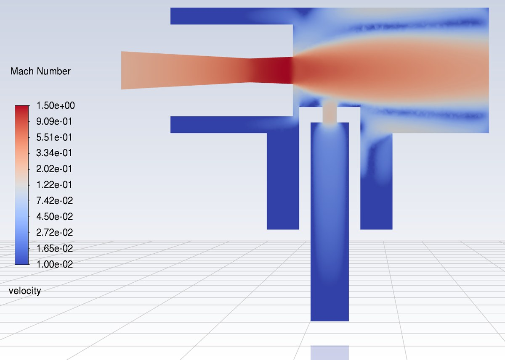
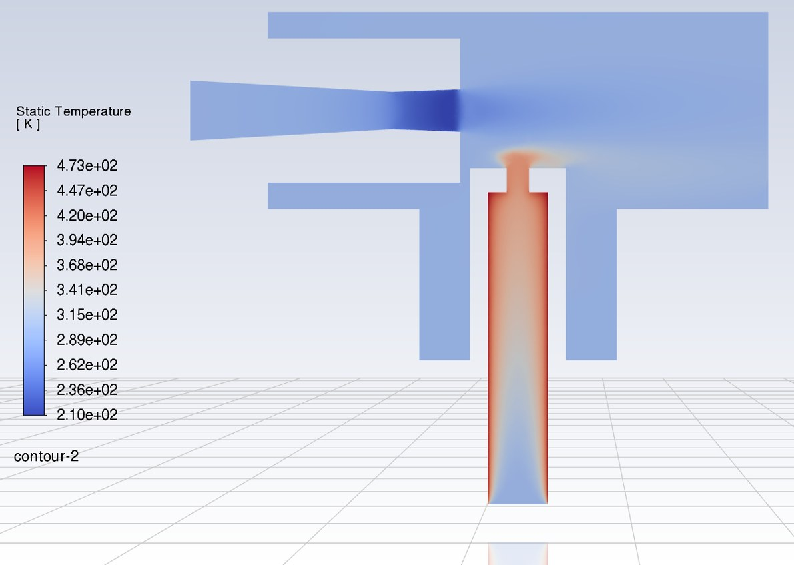
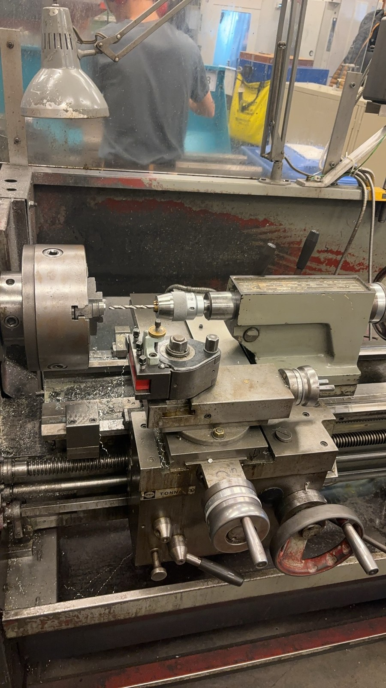
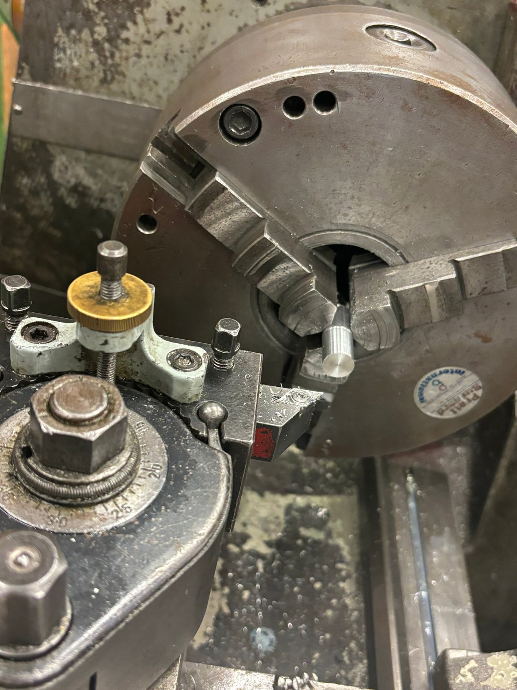
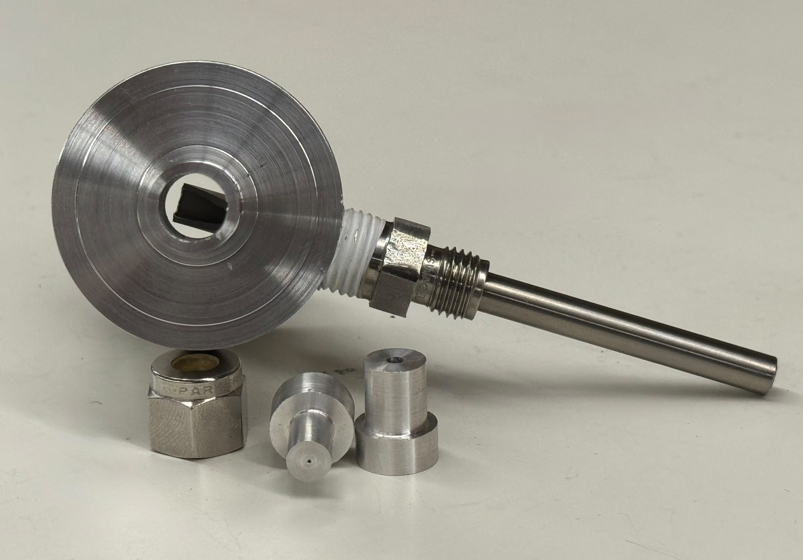
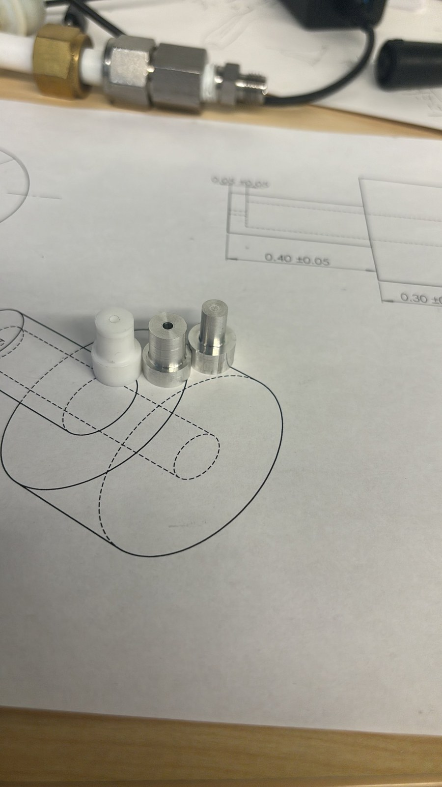

Nanoparticle Generator
Supersonic inlet nozzle design, CFD, and precision machining for a new lab aerosol source
- Year
- 2026
- Context
- UBC Energy & Aerosol Laboratory · co-inventor
- Tools
- ANSYS Fluent · Compressible flow · Supersonic nozzle design · Lathe machining · Precision manufacturing
A new lab nanoparticle generator, where I'm a co-inventor: I designed and machined its supersonic inlet nozzle and checked the flow in ANSYS Fluent.
My role
- Designed the converging–diverging inlet nozzle that accelerates the flow to supersonic speed
- Ran ANSYS Fluent simulations of the generator's compressible flow
- Sourced the tooling, including tapered drill bits, and machined two nozzles on a manual lathe
Note
Some details are left out while the invention is being protected.
Phase 1 · CFD
Compressible-flow simulations in ANSYS Fluent to confirm the design before and alongside manufacturing.
Choked, supersonic flow
The simulations confirm that the nozzle throat is choked, so the mass flow is set by the upstream conditions, and that the jet leaves the nozzle at supersonic speed (Mach number above 1).

No trapped recirculation
I also checked that recirculation driven by the jet doesn't stay trapped in the side channel, so gas and particles are swept through instead of lingering.

Phase 2 · Manufacturing
The nozzle is small, so the tolerances are tight and there is little room for error. I bought the tooling it needed, including tapered drill bits for the converging and diverging sections, and machined two nozzles on a manual lathe.
Machining on the lathe
Drilling the tapered bore with the part held in the chuck, then turning the outside profile to size.


Finished nozzles
Two finished aluminum nozzles, checked against the drawing, with the inlet fitting they mount into.

